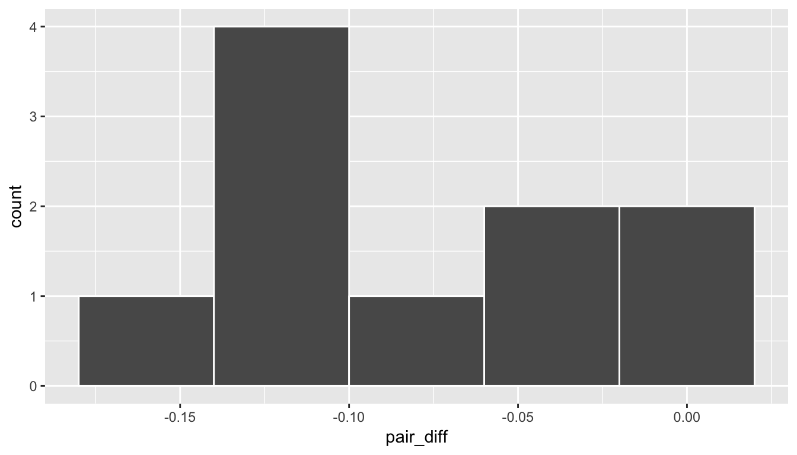

C Test statistic
The test statistic is a random variable based on the sample data. Here, we are interested in seeing if our observed difference in sample proportions corresponding to no opinion on drilling (\(\hat{p}_{college, obs} - \hat{p}_{no\_college, obs}\) = 0.0326481) is statistically different than 0. Assuming that conditions are met and the null hypothesis is true, we can use the standard normal distribution to standardize the difference in sample proportions (\(\hat{P}_{college} - \hat{P}_{no\_college}\)) using the standard error of \(\hat{P}_{college} - \hat{P}_{no\_college}\) and the pooled estimate:
\[ Z =\dfrac{ (\hat{P}_1 - \hat{P}_2) - 0}{\sqrt{\dfrac{\hat{P}(1 - \hat{P})}{n_1} + \dfrac{\hat{P}(1 - \hat{P})}{n_2} }} \sim N(0, 1) \] where \(\hat{P} = \dfrac{\text{total number of successes} }{ \text{total number of cases}}.\)
C.0.0.1 Observed test statistic
While one could compute this observed test statistic by “hand”, the focus here is on the set-up of the problem and in understanding which formula for the test statistic applies. We can use the prop.test function to perform this analysis for us.
stats::prop.test(x = table(offshore$college_grad, offshore$response),
n = nrow(offshore),
alternative = "two.sided",
correct = FALSE)##
## 2-sample test for equality of proportions without continuity
## correction
##
## data: table(offshore$college_grad, offshore$response)
## X-squared = 9.9907, df = 1, p-value = 0.001573
## alternative hypothesis: two.sided
## 95 percent confidence interval:
## 0.03772522 0.16091078
## sample estimates:
## prop 1 prop 2
## 0.3367609 0.2374429prop.test does a \(\chi^2\) test here but this matches up exactly with what we would expect from the test statistic above since \(Z^2 = \chi^2\) so \(\sqrt{9.99} = 3.16 = z_{obs}\): The \(p\)-values are the same because we are focusing on a two-tailed test. The observed difference in sample proportions is 3.16 standard deviations larger than 0.
The \(p\)-value—the probability of observing a \(Z\) value of 3.16 or more extreme in our null distribution—is 0.0016. This can also be calculated in R directly:
2 * pnorm(3.16, lower.tail = FALSE)## [1] 0.001577691The 95% confidence interval is also stated above in the prop.test results.
C.0.1 State conclusion
We, therefore, have sufficient evidence to reject the null hypothesis. Our initial guess that a statistically significant difference did not exist in the proportions of no opinion on offshore drilling between college educated and non-college educated Californians was not validated. We do have evidence to suggest that there is a dependency between college graduation and position on offshore drilling for Californians.
C.0.2 Comparing results
Observing the bootstrap distribution and the null distribution that were created, it makes quite a bit of sense that the results are so similar for traditional and non-traditional methods in terms of the \(p\)-value and the confidence interval since these distributions look very similar to normal distributions. The conditions were not met since the number of pairs was small, but the sample data was not highly skewed. Using any of the methods whether they are traditional (formula-based) or non-traditional (computational-based) lead to similar results.
C.1 Two Means (Independent Samples)
C.1.1 Problem Statement
Average income varies from one region of the country to another, and it often reflects both lifestyles and regional living expenses. Suppose a new graduate is considering a job in two locations, Cleveland, OH and Sacramento, CA, and he wants to see whether the average income in one of these cities is higher than the other. He would like to conduct a hypothesis test based on two randomly selected samples from the 2000 Census. (Tweaked a bit from Diez, Barr, and Çetinkaya-Rundel 2014 [Chapter 5])
C.1.2 Competing Hypotheses
C.1.2.1 In words
Null hypothesis: There is no association between income and location (Cleveland, OH and Sacramento, CA).
Alternative hypothesis: There is an association between income and location (Cleveland, OH and Sacramento, CA).
C.1.2.2 Another way in words
Null hypothesis: The mean income is the same for both cities.
Alternative hypothesis: The mean income is different for the two cities.
C.1.2.3 In symbols (with annotations)
- \(H_0: \mu_{sac} = \mu_{cle}\) or \(H_0: \mu_{sac} - \mu_{cle} = 0\), where \(\mu\) represents the average income.
- \(H_A: \mu_{sac} - \mu_{cle} \ne 0\)
C.1.2.4 Set \(\alpha\)
It’s important to set the significance level before starting the testing using the data. Let’s set the significance level at 5% here.
C.1.3 Exploring the sample data
inc_summ <- cleSac %>% group_by(metro_area) %>%
summarize(sample_size = n(),
mean = mean(income),
sd = sd(income),
minimum = min(income),
lower_quartile = quantile(income, 0.25),
median = median(income),
upper_quartile = quantile(income, 0.75),
max = max(income))
kable(inc_summ)| metro_area | sample_size | mean | sd | minimum | lower_quartile | median | upper_quartile | max |
|---|---|---|---|---|---|---|---|---|
| Cleveland_ OH | 212 | 27467.07 | 27680.68 | 0 | 8475 | 21000 | 35275 | 152400 |
| Sacramento_ CA | 175 | 32427.54 | 35773.63 | 0 | 8050 | 20000 | 49350 | 206900 |
The boxplot below also shows the mean for each group highlighted by the red dots.
cleSac %>% ggplot(aes(x = metro_area, y = income)) +
geom_boxplot() +
stat_summary(fun.y = "mean", geom = "point", color = "red")
C.1.3.1 Guess about statistical significance
We are looking to see if a difference exists in the mean income of the two levels of the explanatory variable. Based solely on the boxplot, we have reason to believe that no difference exists. The distributions of income seem similar and the means fall in roughly the same place.
C.1.4 Non-traditional methods
C.1.4.1 Collecting summary info
Next we will assign some key values to variable names in R:
xbar_cle <- inc_summ$mean[1]
xbar_sac <- inc_summ$mean[2]
obs_diff <- xbar_sac - xbar_cle
n_cle <- inc_summ$sample_size[1]
n_sac <- inc_summ$sample_size[2]C.1.4.2 Randomization for Hypothesis Test
In order to look to see if the observed sample mean for Sacramento of 27467.0660377 is statistically different than that for Cleveland of 32427.5428571, we need to account for the sample sizes. Note that this is the same as looking to see if \(\bar{x}_{sac} - \bar{x}_{cle}\) is statistically different than 0. We also need to determine a process that replicates how the original group sizes of 212 and 175 were selected.
We can use the idea of randomization testing (also known as permutation testing) to simulate the population from which the sample came (with two groups of different sizes) and then generate samples using shuffling from that simulated population to account for sampling variability.
set.seed(2016)
many_shuffles <- do(10000) *
(cleSac %>%
mutate(income = shuffle(income)) %>%
group_by(metro_area) %>%
summarize(mean_inc = mean(income))
)
null_distn <- many_shuffles %>%
group_by(.index) %>%
summarize(diffmean = diff(mean_inc))
null_distn %>% ggplot(aes(x = diffmean)) +
geom_histogram(bins = 30, color = "white")
We can next use this distribution to observe our \(p\)-value. Recall this is a two-tailed test so we will be looking for values that are greater than or equal to 4960.4768194 or less than or equal to -4960.4768194 for our \(p\)-value.
null_distn %>% ggplot(aes(x = diffmean)) +
geom_histogram(bins = 30, color = "white") +
geom_vline(color = "red", xintercept = obs_diff) +
geom_vline(color = "red", xintercept = -obs_diff)
C.1.4.2.1 Calculate \(p\)-value
pvalue <- null_distn %>%
filter( (diffmean >= obs_diff) | (diffmean <= -obs_diff) ) %>%
nrow() / nrow(null_distn)
pvalue## [1] 0.1225So our \(p\)-value is 0.1225 and we fail to reject the null hypothesis at the 5% level. You can also see this from the histogram above that we are not very far into the tail of the null distribution.
C.1.4.3 Bootstrapping for Confidence Interval
We can also create a confidence interval for the unknown population parameter \(\mu_{sac} - \mu_{cle}\) using our sample data with bootstrapping. Here we will bootstrap each of the groups with replacement instead of shuffling. This is done using the groups argument in the resample function to fix the size of each group to be the same as the original group sizes of 175 for Sacramento and 212 for Cleveland.
boot_means <- do(10000) *
cleSac %>%
resample(replace = TRUE, groups = metro_area) %>%
group_by(metro_area) %>%
summarize(mean_inc = mean(income))Next, we calculate the difference in sample means for each of the 10,000 replications:
boot_distn <- boot_means %>%
group_by(.index) %>%
summarize(diffmean = diff(mean_inc))boot_distn %>% ggplot(aes(x = diffmean)) +
geom_histogram(bins = 30, color = "white")
(ci_boot <- boot_distn %>% summarize(lower = quantile(diffmean, probs = 0.025),
upper = quantile(diffmean, probs = 0.975)))## # A tibble: 1 × 2
## lower upper
## <dbl> <dbl>
## 1 -1512.59 11458.85We see that 0 is contained in this confidence interval as a plausible value of \(\mu_{sac} - \mu_{cle}\) (the unknown population parameter). This matches with our hypothesis test results of failing to reject the null hypothesis. Since zero is a plausible value of the population parameter, we do not have evidence that Sacramento incomes are different than Cleveland incomes.
Interpretation: We are 95% confident the true mean yearly income for those living in Sacramento is between 1512.59 dollars smaller to 11458.85 dollars higher than for Cleveland.
Note: You could also use the null distribution based on randomization with a shift to have its center at \(\bar{x}_{sac} - \bar{x}_{cle} = \$4960.48\) instead of at 0 and calculate its percentiles. The confidence interval produced via this method should be comparable to the one done using bootstrapping above.
C.1.5 Traditional methods
C.1.5.0.1 Check conditions
Remember that in order to use the short-cut (formula-based, theoretical) approach, we need to check that some conditions are met.
Independent observations: The observations are independent in both groups.
This
metro_areavariable is met since the cases are randomly selected from each city.Approximately normal: The distribution of the response for each group should be normal or the sample sizes should be at least 30.
cleSac %>% ggplot(aes(x = income)) + geom_histogram(color = "white", binwidth = 20000) + facet_wrap(~ metro_area)
We have some reason to doubt the normality assumption here since both the histograms show deviation from a normal model fitting the data well for each group. The sample sizes for each group are greater than 100 though so the assumptions should still apply.
Independent samples: The samples should be collected without any natural pairing.
There is no mention of there being a relationship between those selected in Cleveland and in Sacramento.
C.1.6 Test statistic
The test statistic is a random variable based on the sample data. Here, we are interested in seeing if our observed difference in sample means (\(\bar{x}_{sac, obs} - \bar{x}_{cle, obs}\) = 4960.4768194) is statistically different than 0. Assuming that conditions are met and the null hypothesis is true, we can use the \(t\) distribution to standardize the difference in sample means (\(\bar{X}_{sac} - \bar{X}_{cle}\)) using the approximate standard error of \(\bar{X}_{sac} - \bar{X}_{cle}\) (invoking \(S_{sac}\) and \(S_{cle}\) as estimates of unknown \(\sigma_{sac}\) and \(\sigma_{cle}\)).
\[ T =\dfrac{ (\bar{X}_1 - \bar{X}_2) - 0}{ \sqrt{\dfrac{S_1^2}{n_1} + \dfrac{S_2^2}{n_2}} } \sim t (df = min(n_1 - 1, n_2 - 1)) \] where 1 = Sacramento and 2 = Cleveland with \(S_1^2\) and \(S_2^2\) the sample variance of the incomes of both cities, respectively, and \(n_1 = 175\) for Sacramento and \(n_2 = 212\) for Cleveland.
C.1.6.1 Observed test statistic
Note that we could also do (ALMOST) this test directly using the t.test function. The x and y arguments are expected to both be numeric vectors here so we’ll need to appropriately filter our data sets.
cleveland <- cleSac %>% filter(metro_area == "Cleveland_ OH")
sacramento <- cleSac %>% filter(metro_area != "Cleveland_ OH")
t.test(y = cleveland$income, x = sacramento$income,
alternative = "two.sided")##
## Welch Two Sample t-test
##
## data: sacramento$income and cleveland$income
## t = 1.5006, df = 323.36, p-value = 0.1344
## alternative hypothesis: true difference in means is not equal to 0
## 95 percent confidence interval:
## -1542.758 11463.712
## sample estimates:
## mean of x mean of y
## 32427.54 27467.07Note that the degrees of freedom reported above are different than what we used above in specifying the Test Statistic. The degrees of freedom used here is also known as the Satterthwaite approximation and involves a quite complicated formula. For most problems, the must simpler smaller of sample sizes minus one will suffice.
While one could compute this observed test statistic by “hand”, the focus here is on the set-up of the problem and in understanding which formula for the test statistic applies.
We see here that the observed test statistic value is around -1.5 with \(df = min(212 - 1, 175 - 1) = 174\). Recall that for large degrees of freedom, the \(t\) distribution is roughly equal to the standard normal curve so our difference in df for the Satterthwaite and “min” variations doesn’t really matter.
C.1.7 Compute \(p\)-value
The \(p\)-value—the probability of observing an \(t_{174}\) value of -1.501 or more extreme (in both directions) in our null distribution—is 0.13. This can also be calculated in R directly:
2 * pt(-1.501, df = min(212 - 1, 175 - 1), lower.tail = TRUE)## [1] 0.135168We can also approximate by using the standard normal curve:
2 * pnorm(-1.501)## [1] 0.1333556Note that the 95 percent confidence interval given above matches well with the one calculated using bootstrapping.
C.1.8 State conclusion
We, therefore, do not have sufficient evidence to reject the null hypothesis. Our initial guess that a statistically significant difference not existing in the means was backed by this statistical analysis. We do not have evidence to suggest that the true mean income differs between Cleveland, OH and Sacramento, CA based on this data.
C.1.9 Comparing results
Observing the bootstrap distribution and the null distribution that were created, it makes quite a bit of sense that the results are so similar for traditional and non-traditional methods in terms of the \(p\)-value and the confidence interval since these distributions look very similar to normal distributions. The conditions also being met leads us to better guess that using any of the methods whether they are traditional (formula-based) or non-traditional (computational-based) will lead to similar results.
C.2 Two Means (Paired Samples)
C.2.0.1 Problem Statement
Trace metals in drinking water affect the flavor and an unusually high concentration can pose a health hazard. Ten pairs of data were taken measuring zinc concentration in bottom water and surface water at 10 randomly selected locations on a stretch of river. Do the data suggest that the true average concentration in the surface water is smaller than that of bottom water? (Note that units are not given.) [Tweaked a bit from https://onlinecourses.science.psu.edu/stat500/node/51]
C.2.1 Competing Hypotheses
C.2.1.1 In words
Null hypothesis: The mean concentration in the bottom water is the same as that of the surface water at different paired locations.
Alternative hypothesis: The mean concentration in the surface water is smaller than that of the bottom water at different paired locations.
C.2.1.2 In symbols (with annotations)
- \(H_0: \mu_{diff} = 0\), where \(\mu_{diff}\) represents the mean difference in concentration for surface water minus bottom water.
- \(H_A: \mu_{diff} < 0\)
C.2.1.3 Set \(\alpha\)
It’s important to set the significance level before starting the testing using the data. Let’s set the significance level at 5% here.
C.2.2 Exploring the sample data
download.file("http://ismayc.github.io/teaching/sample_problems/zinc_tidy.csv",
destfile = "data/zinc_tidy.csv",
method = "curl")
zinc_tidy <- read_csv("data/zinc_tidy.csv")We want to look at the differences in surface - bottom for each location:
zinc_diff <- zinc_tidy %>%
group_by(loc_id) %>%
summarize(pair_diff = diff(concentration))zinc_summ <- zinc_diff %>%
summarize(sample_size = n(),
mean = mean(pair_diff),
sd = sd(pair_diff),
minimum = min(pair_diff),
lower_quartile = quantile(pair_diff, 0.25),
median = median(pair_diff),
upper_quartile = quantile(pair_diff, 0.75),
max = max(pair_diff))
kable(zinc_summ)| sample_size | mean | sd | minimum | lower_quartile | median | upper_quartile | max |
|---|---|---|---|---|---|---|---|
| 10 | -0.0804 | 0.0522732 | -0.177 | -0.11 | -0.084 | -0.0355 | -0.015 |
The histogram below also shows the distribution of pair_diff.
zinc_diff %>% ggplot(aes(x = pair_diff)) +
geom_histogram(binwidth = 0.04, color = "white")
C.2.2.1 Guess about statistical significance
We are looking to see if the sample paired mean difference of -0.0804 is statistically less than 0. They seem to be quite close, but we have a small number of pairs here. Let’s guess that we will fail to reject the null hypothesis.
C.2.3 Non-traditional methods
C.2.3.1 Collecting summary info
Next we will assign some key values to variable names in R:
obs_diff <- zinc_summ$mean
n_pairs <- zinc_summ$sample_sizeC.2.3.2 Randomization for Hypothesis Test
In order to look to see if the observed sample mean difference \(\bar{x}_{diff} = -0.0804\) is statistically less than 0, we need to account for the number of pairs. We also need to determine a process that replicates how the paired data was selected in a way similar to how we calculated our original difference in sample means.
We can use the idea of randomization testing (also known as permutation testing) to simulate the population from which the sample came and then generate samples using shuffling from that simulated population to account for sampling variability. In this case, we will shuffle along each paired location. So values that were on the bottom of location 1 may now be switched to be on the surface or vice versa.
library(mosaic)
set.seed(2016)
many_shuffles <- do(10000) *
(zinc_tidy %>%
mutate(concentration = shuffle(concentration, groups = loc_id)) %>%
group_by(loc_id) %>%
summarize(pair_diff = diff(concentration))
)
null_distn <- many_shuffles %>%
group_by(.index) %>%
summarize(mean_diff = mean(pair_diff))
null_distn %>% ggplot(aes(x = mean_diff)) +
geom_histogram(bins = 30, color = "white")
We can next use this distribution to observe our \(p\)-value. Recall this is a left-tailed test so we will be looking for values that are less than or equal to -0.0804 for our \(p\)-value.
null_distn %>% ggplot(aes(x = mean_diff)) +
geom_histogram(bins = 30, color = "white") +
geom_vline(color = "red", xintercept = obs_diff)
C.2.3.2.1 Calculate \(p\)-value
pvalue <- null_distn %>%
filter(mean_diff <= obs_diff) %>%
nrow() / nrow(null_distn)
pvalue## [1] 0.0009So our \(p\)-value is essentially 0.0009 and we reject the null hypothesis at the 5% level. You can also see this from the histogram above that we are far into the left tail of the null distribution.
C.2.3.3 Bootstrapping for Confidence Interval
We can also create a confidence interval for the unknown population parameter \(\mu_{diff}\) using our sample data (the calculated differences) with bootstrapping. This is similar to the bootstrapping done in a one sample mean case, except now our data is differences instead of raw numerical data.
boot_distn <- do(10000) *
resample(zinc_diff, replace = TRUE) %>%
summarize(mean_diff = mean(pair_diff))boot_distn %>% ggplot(aes(x = mean_diff)) +
geom_histogram(bins = 30, color = "white")
(ci_boot <- boot_distn %>% summarize(lower = quantile(mean_diff, probs = 0.025),
upper = quantile(mean_diff, probs = 0.975)))## lower upper
## 1 -0.1114 -0.0504975We see that 0 is not contained in this confidence interval as a plausible value of \(\mu_{diff}\) (the unknown population parameter). This matches with our hypothesis test results of rejecting the null hypothesis. Since zero is not a plausible value of the population parameter and since the entire confidence interval falls below zero, we have evidence that surface zinc concentration levels are lower, on average, than bottom level zinc concentrations.
Interpretation: We are 95% confident the true mean zinc concentration on the surface is between 0.11 units smaller to 0.05 units smaller than on the bottom.
Note: You could also use the null distribution based on randomization with a shift to have its center at \(\bar{x}_{diff} = -0.08\) instead of at 0 and calculate its percentiles. The confidence interval produced via this method should be comparable to the one done using bootstrapping above.
C.2.4 Traditional methods
C.2.4.1 Check conditions
Remember that in order to use the shortcut (formula-based, theoretical) approach, we need to check that some conditions are met.
- Independent observations: The observations among pairs are independent.
The locations are selected independently through random sampling so this condition is met.
Approximately normal: The distribution of population of differences is normal or the number of pairs is at least 30.
The histogram above does show some skew so we have reason to doubt the population being normal based on this sample. We also only have 10 pairs which is fewer than the 30 needed. A theory-based test may not be valid here.
C.2.4.2 Test statistic
The test statistic is a random variable based on the sample data. Here, we want to look at a way to estimate the population mean difference \(\mu_{diff}\). A good guess is the sample mean difference \(\bar{X}_{diff}\). Recall that this sample mean is actually a random variable that will vary as different samples are (theoretically, would be) collected. We are looking to see how likely is it for us to have observed a sample mean of \(\bar{x}_{diff, obs} = 0.0804\) or larger assuming that the population mean difference is 0 (assuming the null hypothesis is true). If the conditions are met and assuming \(H_0\) is true, we can “standardize” this original test statistic of \(\bar{X}_{diff}\) into a \(T\) statistic that follows a \(t\) distribution with degrees of freedom equal to \(df = n - 1\):
\[ T =\dfrac{ \bar{X}_{diff} - 0}{ S_{diff} / \sqrt{n} } \sim t (df = n - 1) \]
where \(S\) represents the standard deviation of the sample differences and \(n\) is the number of pairs.
C.2.4.2.1 Observed test statistic
While one could compute this observed test statistic by “hand”, the focus here is on the set-up of the problem and in understanding which formula for the test statistic applies. We can use the t.test function on the differences to perform this analysis for us.
stats::t.test(x = zinc_diff$pair_diff,
alternative = "less",
mu = 0)##
## One Sample t-test
##
## data: zinc_diff$pair_diff
## t = -4.8638, df = 9, p-value = 0.0004456
## alternative hypothesis: true mean is less than 0
## 95 percent confidence interval:
## -Inf -0.0500982
## sample estimates:
## mean of x
## -0.0804We see here that the \(t_{obs}\) value is around -5.
C.2.4.3 Compute \(p\)-value
The \(p\)-value—the probability of observing an \(t_{obs}\) value of -5 or less in our null distribution of a \(t\) with 9 degrees of freedom—is 0.0004. This can also be calculated in R directly:
pt(-5, df = nrow(zinc_diff) - 1, lower.tail = TRUE)## [1] 0.000369484C.2.4.4 State conclusion
We, therefore, have sufficient evidence to reject the null hypothesis. Our initial guess that our observed sample mean difference was not statistically less than the hypothesized mean of 0 has been invalidated here. Based on this sample, we have evidence that the mean concentration in the bottom water is greater than that of the surface water at different paired locations.
C.2.5 Comparing results
Observing the bootstrap distribution and the null distribution that were created, it makes quite a bit of sense that the results are so similar for traditional and non-traditional methods in terms of the \(p\)-value and the confidence interval since these distributions look very similar to normal distributions. The conditions were not met since the number of pairs was small, but the sample data was not highly skewed. Using any of the methods whether they are traditional (formula-based) or non-traditional (computational-based) lead to similar results.
References
Diez, David M, Christopher D Barr, and Mine Çetinkaya-Rundel. 2014. Introductory Statistics with Randomization and Simulation. First Edition. https://www.openintro.org/stat/textbook.php?stat_book=isrs.